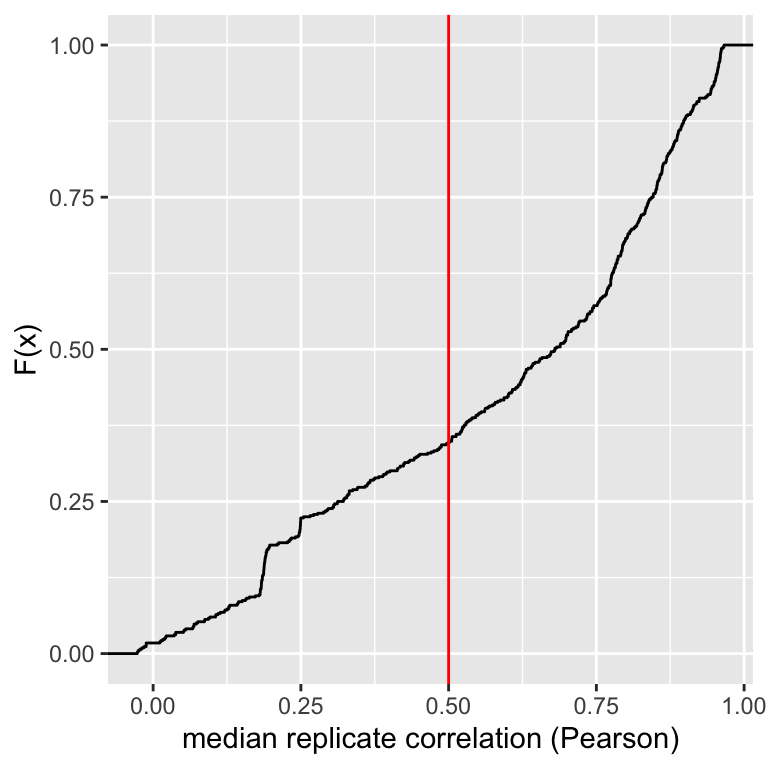
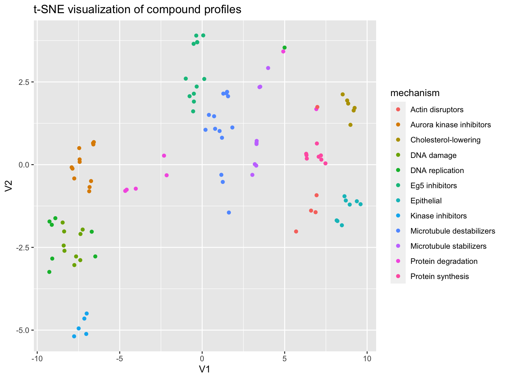

vignettes/predict_moa.Rmd
predict_moa.RmdThis vignette demonstrates predicting compound mechanism-of-action using morphological profiling data. See the vignette single_cell_analysis for details about this dataset.
Per-well profiles computed in single_cell_analysis are loaded, as well as metadata associated with these profiles (obtained from BBBC021)
profiles <- readr::read_csv(system.file("extdata", "ljosa_jbiomolscreen_2013_per_well_mean.csv", package = "cytominergallery")) moa <- readr::read_csv(system.file("extdata", "BBBC021_v1_moa.csv", package = "cytominergallery")) %>% rename(Image_Metadata_Compound = compound, Image_Metadata_Concentration = concentration, Image_Metadata_MoA = moa ) metadata <- readr::read_csv(system.file("extdata", "BBBC021_v1_image.csv", package = "cytominergallery")) %>% rename(Image_Metadata_Plate = Image_Metadata_Plate_DAPI, Image_Metadata_Well = Image_Metadata_Well_DAPI ) %>% select(matches("^Image_Metadata")) %>% inner_join(moa) %>% distinct() profiles %<>% inner_join(metadata) variables <- colnames(profiles) %>% str_subset("^Nuclei_|^Cells_|^Cytoplasm_")
How many compounds?
profiles %>% filter(Image_Metadata_Compound != "DMSO") %>% distinct(Image_Metadata_Compound) %>% tally() %>% rename(`Number of compounds` = n) %>% knitr::kable()
| Number of compounds |
|---|
| 38 |
How many unique treatments (compound-concentration pairs)?
profiles %>% filter(Image_Metadata_Compound != "DMSO") %>% distinct(Image_Metadata_Compound, Image_Metadata_Concentration) %>% tally() %>% rename(`Number of unique treatments` = n) %>% knitr::kable()
| Number of unique treatments |
|---|
| 103 |
How many replicates per unique treatment?
profiles %>% filter(Image_Metadata_Compound != "DMSO") %>% count(Image_Metadata_Compound, Image_Metadata_Concentration) %>% rename(`Number of replicates` = n) %>% knitr::kable()
| Image_Metadata_Compound | Image_Metadata_Concentration | Number of replicates |
|---|---|---|
| ALLN | 3.000 | 3 |
| ALLN | 100.000 | 3 |
| alsterpaullone | 1.000 | 2 |
| alsterpaullone | 3.000 | 2 |
| anisomycin | 0.300 | 3 |
| anisomycin | 1.000 | 3 |
| AZ-A | 0.100 | 3 |
| AZ-A | 0.300 | 3 |
| AZ-A | 1.000 | 3 |
| AZ-A | 3.000 | 3 |
| AZ-A | 10.000 | 3 |
| AZ-A | 30.000 | 3 |
| AZ-C | 0.001 | 3 |
| AZ-C | 0.003 | 3 |
| AZ-C | 0.010 | 3 |
| AZ-C | 0.030 | 3 |
| AZ-C | 0.100 | 3 |
| AZ-C | 0.300 | 3 |
| AZ-C | 1.000 | 3 |
| AZ-J | 1.000 | 3 |
| AZ-J | 3.000 | 3 |
| AZ-J | 10.000 | 3 |
| AZ-U | 1.000 | 3 |
| AZ-U | 3.000 | 3 |
| AZ-U | 10.000 | 3 |
| AZ138 | 0.030 | 3 |
| AZ138 | 0.100 | 3 |
| AZ138 | 0.300 | 3 |
| AZ138 | 1.000 | 3 |
| AZ138 | 3.000 | 3 |
| AZ258 | 0.100 | 3 |
| AZ258 | 0.300 | 3 |
| AZ258 | 1.000 | 3 |
| AZ841 | 0.100 | 3 |
| AZ841 | 0.300 | 3 |
| AZ841 | 1.000 | 3 |
| bryostatin | 0.300 | 2 |
| camptothecin | 0.003 | 3 |
| camptothecin | 0.010 | 3 |
| camptothecin | 0.030 | 3 |
| chlorambucil | 10.000 | 3 |
| cisplatin | 10.000 | 3 |
| colchicine | 0.030 | 3 |
| cyclohexamide | 5.000 | 3 |
| cyclohexamide | 15.000 | 3 |
| cyclohexamide | 50.000 | 3 |
| cytochalasin B | 10.000 | 3 |
| cytochalasin B | 30.000 | 3 |
| cytochalasin D | 0.300 | 3 |
| demecolcine | 0.300 | 3 |
| demecolcine | 1.000 | 3 |
| demecolcine | 3.000 | 3 |
| demecolcine | 10.000 | 3 |
| docetaxel | 0.030 | 3 |
| docetaxel | 0.100 | 3 |
| docetaxel | 0.300 | 3 |
| emetine | 0.100 | 3 |
| emetine | 0.300 | 3 |
| emetine | 1.000 | 3 |
| epothilone B | 0.100 | 3 |
| epothilone B | 0.300 | 3 |
| epothilone B | 1.000 | 3 |
| etoposide | 1.000 | 3 |
| etoposide | 3.000 | 3 |
| etoposide | 10.000 | 3 |
| floxuridine | 10.000 | 3 |
| floxuridine | 30.000 | 3 |
| lactacystin | 10.000 | 3 |
| latrunculin B | 1.000 | 3 |
| latrunculin B | 3.000 | 3 |
| methotrexate | 10.000 | 3 |
| mevinolin/lovastatin | 1.500 | 3 |
| mevinolin/lovastatin | 5.000 | 3 |
| mevinolin/lovastatin | 15.000 | 3 |
| MG-132 | 0.100 | 3 |
| MG-132 | 3.000 | 3 |
| mitomycin C | 0.100 | 3 |
| mitomycin C | 0.300 | 3 |
| mitomycin C | 1.000 | 3 |
| mitomycin C | 3.000 | 3 |
| mitoxantrone | 0.003 | 3 |
| mitoxantrone | 0.010 | 3 |
| nocodazole | 1.000 | 3 |
| nocodazole | 3.000 | 3 |
| PD-169316 | 3.000 | 2 |
| PD-169316 | 10.000 | 2 |
| PP-2 | 3.000 | 2 |
| PP-2 | 10.000 | 2 |
| proteasome inhibitor I | 0.100 | 3 |
| proteasome inhibitor I | 3.000 | 3 |
| simvastatin | 2.000 | 3 |
| simvastatin | 6.000 | 3 |
| simvastatin | 20.000 | 3 |
| taxol | 0.300 | 3 |
| taxol | 1.000 | 3 |
| taxol | 3.000 | 3 |
| vincristine | 0.003 | 3 |
| vincristine | 0.010 | 3 |
| vincristine | 0.030 | 3 |
| vincristine | 0.100 | 3 |
| vincristine | 0.300 | 3 |
| vincristine | 1.000 | 3 |
| vincristine | 3.000 | 3 |
How many DMSO wells per plate?
profiles %>% filter(Image_Metadata_Compound == "DMSO") %>% count(Image_Metadata_Plate) %>% rename(`Number of DMSO wells` = n) %>% knitr::kable()
| Image_Metadata_Plate | Number of DMSO wells |
|---|---|
| Week1_22123 | 6 |
| Week1_22141 | 6 |
| Week1_22161 | 6 |
| Week1_22361 | 6 |
| Week1_22381 | 6 |
| Week1_22401 | 6 |
| Week10_40111 | 6 |
| Week10_40115 | 6 |
| Week10_40119 | 6 |
| Week2_24121 | 6 |
| Week2_24141 | 6 |
| Week2_24161 | 6 |
| Week2_24361 | 6 |
| Week2_24381 | 6 |
| Week2_24401 | 6 |
| Week3_25421 | 6 |
| Week3_25441 | 6 |
| Week3_25461 | 6 |
| Week3_25681 | 6 |
| Week3_25701 | 6 |
| Week3_25721 | 6 |
| Week4_27481 | 6 |
| Week4_27521 | 6 |
| Week4_27542 | 6 |
| Week4_27801 | 6 |
| Week4_27821 | 6 |
| Week4_27861 | 6 |
| Week5_28901 | 6 |
| Week5_28921 | 6 |
| Week5_28961 | 6 |
| Week5_29301 | 6 |
| Week5_29321 | 6 |
| Week5_29341 | 6 |
| Week6_31641 | 6 |
| Week6_31661 | 6 |
| Week6_31681 | 6 |
| Week6_32061 | 6 |
| Week6_32121 | 6 |
| Week6_32161 | 6 |
| Week7_34341 | 6 |
| Week7_34381 | 6 |
| Week7_34641 | 6 |
| Week7_34661 | 6 |
| Week7_34681 | 6 |
| Week8_38203 | 6 |
| Week8_38221 | 6 |
| Week8_38241 | 6 |
| Week8_38341 | 6 |
| Week8_38342 | 6 |
| Week9_39206 | 6 |
| Week9_39221 | 6 |
| Week9_39222 | 6 |
| Week9_39282 | 6 |
| Week9_39283 | 6 |
| Week9_39301 | 6 |
Next, lets filter the set of features based on various measures of quality
Remove features that have near-zero variance. This dataset doesn’t have any such features, so nothing is removed.
profiles <- cytominer::variable_select( population = profiles, variables = variables, sample = profiles, operation = "variance_threshold" ) %>% collect() variables <- colnames(profiles) %>% str_subset("^Nuclei_|^Cells_|^Cytoplasm_")
Remove features that have poor correlation across replicates. To do so, lets first compute the correlations.
doParallel::registerDoParallel(cores = 2) feature_replicate_correlations <- profiles %>% cytominer::variable_importance( variables = variables, strata = c("Image_Metadata_Compound", "Image_Metadata_Concentration"), replicates = 3, cores = 2)
What the does the distribution look like?
ggplot(feature_replicate_correlations, aes(median)) + stat_ecdf() + geom_vline(xintercept = 0.5, color = "red") + xlab("median replicate correlation (Pearson)") + ylab("F(x)")

Here, we select a threshold and remove features that have a replicate correlation lower than that threshold
profiles %<>% select_(.dots = setdiff(x = colnames(profiles), y = feature_replicate_correlations %>% filter(median < 0.5) %>% magrittr::extract2("variable")) )
## Warning: select_() is deprecated.
## Please use select() instead
##
## The 'programming' vignette or the tidyeval book can help you
## to program with select() : https://tidyeval.tidyverse.org
## This warning is displayed once per session.variables <- colnames(profiles) %>% str_subset("^Nuclei_|^Cells_|^Cytoplasm_")
Filter based on correlation between features. The morphological features extracted contain several highly correlated groups. We want to to prune the set of features, retaining only one feature from each of these highly correlated sets. The function correlation_threshold provides an approximate (greedy) solution to this problem. After excluding the features, no pair of features have a correlation greater than cutoff indicated below.
profiles <- cytominer::variable_select( population = profiles, variables = variables, sample = profiles, operation = "correlation_threshold", cutoff = 0.95) %>% collect()
## INFO [2020-04-29 13:46:03] excluded:
## INFO [2020-04-29 13:46:03] Cells_AreaShape_MaximumRadius
## INFO [2020-04-29 13:46:03] Cells_AreaShape_MeanRadius
## INFO [2020-04-29 13:46:03] Cells_AreaShape_MedianRadius
## INFO [2020-04-29 13:46:03] Cells_AreaShape_MinFeretDiameter
## INFO [2020-04-29 13:46:03] Cells_AreaShape_MinorAxisLength
## INFO [2020-04-29 13:46:03] Cells_Intensity_MaxIntensity_CorrActin
## INFO [2020-04-29 13:46:03] Cells_Intensity_MaxIntensity_CorrTub
## INFO [2020-04-29 13:46:03] Cells_Intensity_MeanIntensityEdge_CorrTub
## INFO [2020-04-29 13:46:03] Cells_Intensity_MeanIntensity_CorrActin
## INFO [2020-04-29 13:46:03] Cells_Intensity_MeanIntensity_CorrTub
## INFO [2020-04-29 13:46:03] Cells_Intensity_MedianIntensity_CorrActin
## INFO [2020-04-29 13:46:03] Cells_Intensity_MedianIntensity_CorrTub
## INFO [2020-04-29 13:46:03] Cells_Intensity_MinIntensity_CorrActin
## INFO [2020-04-29 13:46:03] Cells_Intensity_StdIntensityEdge_CorrActin
## INFO [2020-04-29 13:46:03] Cells_Intensity_StdIntensityEdge_CorrTub
## INFO [2020-04-29 13:46:03] Cells_Intensity_StdIntensity_CorrActin
## INFO [2020-04-29 13:46:03] Cells_Intensity_StdIntensity_CorrTub
## INFO [2020-04-29 13:46:03] Cells_Intensity_UpperQuartileIntensity_CorrActin
## INFO [2020-04-29 13:46:03] Cells_Intensity_UpperQuartileIntensity_CorrTub
## INFO [2020-04-29 13:46:03] Cells_Neighbors_NumberOfNeighbors_3
## INFO [2020-04-29 13:46:03] Cells_Texture_SumVariance_CorrActin_3_0
## INFO [2020-04-29 13:46:03] Cells_Texture_Variance_CorrActin_10_0
## INFO [2020-04-29 13:46:03] Cells_Texture_Variance_CorrActin_3_0
## INFO [2020-04-29 13:46:03] Cells_Texture_Variance_CorrTub_10_0
## INFO [2020-04-29 13:46:03] Cytoplasm_AreaShape_Area
## INFO [2020-04-29 13:46:03] Cytoplasm_AreaShape_MajorAxisLength
## INFO [2020-04-29 13:46:03] Cytoplasm_AreaShape_MaxFeretDiameter
## INFO [2020-04-29 13:46:03] Cytoplasm_AreaShape_MaximumRadius
## INFO [2020-04-29 13:46:03] Cytoplasm_AreaShape_MeanRadius
## INFO [2020-04-29 13:46:03] Cytoplasm_AreaShape_MedianRadius
## INFO [2020-04-29 13:46:03] Cytoplasm_AreaShape_MinFeretDiameter
## INFO [2020-04-29 13:46:03] Cytoplasm_AreaShape_MinorAxisLength
## INFO [2020-04-29 13:46:03] Cytoplasm_AreaShape_Solidity
## INFO [2020-04-29 13:46:03] Cytoplasm_AreaShape_Zernike_0_0
## INFO [2020-04-29 13:46:03] Cytoplasm_Intensity_IntegratedIntensityEdge_CorrActin
## INFO [2020-04-29 13:46:03] Cytoplasm_Intensity_IntegratedIntensityEdge_CorrTub
## INFO [2020-04-29 13:46:03] Cytoplasm_Intensity_IntegratedIntensity_CorrTub
## INFO [2020-04-29 13:46:03] Cytoplasm_Intensity_MADIntensity_CorrActin
## INFO [2020-04-29 13:46:03] Cytoplasm_Intensity_MADIntensity_CorrTub
## INFO [2020-04-29 13:46:03] Cytoplasm_Intensity_MassDisplacement_CorrActin
## INFO [2020-04-29 13:46:03] Cytoplasm_Intensity_MassDisplacement_CorrTub
## INFO [2020-04-29 13:46:03] Cytoplasm_Intensity_MaxIntensityEdge_CorrActin
## INFO [2020-04-29 13:46:03] Cytoplasm_Intensity_MaxIntensity_CorrActin
## INFO [2020-04-29 13:46:03] Cytoplasm_Intensity_MaxIntensity_CorrTub
## INFO [2020-04-29 13:46:03] Cytoplasm_Intensity_MeanIntensityEdge_CorrActin
## INFO [2020-04-29 13:46:03] Cytoplasm_Intensity_MeanIntensityEdge_CorrTub
## INFO [2020-04-29 13:46:03] Cytoplasm_Intensity_MeanIntensity_CorrActin
## INFO [2020-04-29 13:46:03] Cytoplasm_Intensity_MeanIntensity_CorrTub
## INFO [2020-04-29 13:46:03] Cytoplasm_Intensity_MedianIntensity_CorrActin
## INFO [2020-04-29 13:46:03] Cytoplasm_Intensity_MedianIntensity_CorrTub
## INFO [2020-04-29 13:46:03] Cytoplasm_Intensity_MinIntensityEdge_CorrActin
## INFO [2020-04-29 13:46:03] Cytoplasm_Intensity_MinIntensityEdge_CorrTub
## INFO [2020-04-29 13:46:03] Cytoplasm_Intensity_MinIntensity_CorrActin
## INFO [2020-04-29 13:46:03] Cytoplasm_Intensity_MinIntensity_CorrTub
## INFO [2020-04-29 13:46:03] Cytoplasm_Intensity_StdIntensityEdge_CorrActin
## INFO [2020-04-29 13:46:03] Cytoplasm_Intensity_StdIntensityEdge_CorrTub
## INFO [2020-04-29 13:46:03] Cytoplasm_Intensity_StdIntensity_CorrActin
## INFO [2020-04-29 13:46:03] Cytoplasm_Intensity_StdIntensity_CorrTub
## INFO [2020-04-29 13:46:03] Cytoplasm_Intensity_UpperQuartileIntensity_CorrActin
## INFO [2020-04-29 13:46:03] Cytoplasm_Intensity_UpperQuartileIntensity_CorrTub
## INFO [2020-04-29 13:46:03] Cytoplasm_Texture_DifferenceEntropy_CorrActin_3_0
## INFO [2020-04-29 13:46:03] Cytoplasm_Texture_DifferenceVariance_CorrTub_10_0
## INFO [2020-04-29 13:46:03] Cytoplasm_Texture_DifferenceVariance_CorrTub_3_0
## INFO [2020-04-29 13:46:03] Cytoplasm_Texture_InfoMeas2_CorrActin_3_0
## INFO [2020-04-29 13:46:03] Cytoplasm_Texture_SumAverage_CorrTub_3_0
## INFO [2020-04-29 13:46:03] Cytoplasm_Texture_Variance_CorrTub_10_0
## INFO [2020-04-29 13:46:03] Nuclei_AreaShape_MajorAxisLength
## INFO [2020-04-29 13:46:03] Nuclei_AreaShape_MaxFeretDiameter
## INFO [2020-04-29 13:46:03] Nuclei_AreaShape_MeanRadius
## INFO [2020-04-29 13:46:03] Nuclei_AreaShape_MinorAxisLength
## INFO [2020-04-29 13:46:03] Nuclei_AreaShape_Perimeter
## INFO [2020-04-29 13:46:03] Nuclei_AreaShape_Zernike_3_3
## INFO [2020-04-29 13:46:03] Nuclei_AreaShape_Zernike_4_4
## INFO [2020-04-29 13:46:03] Nuclei_AreaShape_Zernike_5_3
## INFO [2020-04-29 13:46:03] Nuclei_AreaShape_Zernike_6_6
## INFO [2020-04-29 13:46:03] Nuclei_AreaShape_Zernike_7_3
## INFO [2020-04-29 13:46:03] Nuclei_AreaShape_Zernike_7_5
## INFO [2020-04-29 13:46:03] Nuclei_AreaShape_Zernike_7_7
## INFO [2020-04-29 13:46:03] Nuclei_AreaShape_Zernike_9_7
## INFO [2020-04-29 13:46:03] Nuclei_AreaShape_Zernike_9_9
## INFO [2020-04-29 13:46:03] Nuclei_Intensity_IntegratedIntensityEdge_CorrActin
## INFO [2020-04-29 13:46:03] Nuclei_Intensity_IntegratedIntensityEdge_CorrTub
## INFO [2020-04-29 13:46:03] Nuclei_Intensity_IntegratedIntensity_CorrActin
## INFO [2020-04-29 13:46:03] Nuclei_Intensity_IntegratedIntensity_CorrTub
## INFO [2020-04-29 13:46:03] Nuclei_Intensity_LowerQuartileIntensity_CorrActin
## INFO [2020-04-29 13:46:03] Nuclei_Intensity_LowerQuartileIntensity_CorrTub
## INFO [2020-04-29 13:46:03] Nuclei_Intensity_MADIntensity_CorrActin
## INFO [2020-04-29 13:46:03] Nuclei_Intensity_MADIntensity_CorrTub
## INFO [2020-04-29 13:46:03] Nuclei_Intensity_MaxIntensityEdge_CorrActin
## INFO [2020-04-29 13:46:03] Nuclei_Intensity_MaxIntensityEdge_CorrTub
## INFO [2020-04-29 13:46:03] Nuclei_Intensity_MaxIntensity_CorrActin
## INFO [2020-04-29 13:46:03] Nuclei_Intensity_MaxIntensity_CorrTub
## INFO [2020-04-29 13:46:03] Nuclei_Intensity_MeanIntensityEdge_CorrActin
## INFO [2020-04-29 13:46:03] Nuclei_Intensity_MeanIntensityEdge_CorrDAPI
## INFO [2020-04-29 13:46:03] Nuclei_Intensity_MeanIntensityEdge_CorrTub
## INFO [2020-04-29 13:46:03] Nuclei_Intensity_MeanIntensity_CorrActin
## INFO [2020-04-29 13:46:03] Nuclei_Intensity_MeanIntensity_CorrDAPI
## INFO [2020-04-29 13:46:03] Nuclei_Intensity_MeanIntensity_CorrTub
## INFO [2020-04-29 13:46:03] Nuclei_Intensity_MedianIntensity_CorrActin
## INFO [2020-04-29 13:46:03] Nuclei_Intensity_MedianIntensity_CorrDAPI
## INFO [2020-04-29 13:46:03] Nuclei_Intensity_MedianIntensity_CorrTub
## INFO [2020-04-29 13:46:03] Nuclei_Intensity_MinIntensityEdge_CorrActin
## INFO [2020-04-29 13:46:03] Nuclei_Intensity_MinIntensityEdge_CorrDAPI
## INFO [2020-04-29 13:46:03] Nuclei_Intensity_MinIntensity_CorrActin
## INFO [2020-04-29 13:46:03] Nuclei_Intensity_MinIntensity_CorrDAPI
## INFO [2020-04-29 13:46:03] Nuclei_Intensity_MinIntensity_CorrTub
## INFO [2020-04-29 13:46:03] Nuclei_Intensity_StdIntensityEdge_CorrActin
## INFO [2020-04-29 13:46:03] Nuclei_Intensity_StdIntensity_CorrActin
## INFO [2020-04-29 13:46:03] Nuclei_Intensity_StdIntensity_CorrDAPI
## INFO [2020-04-29 13:46:03] Nuclei_Intensity_StdIntensity_CorrTub
## INFO [2020-04-29 13:46:03] Nuclei_Intensity_UpperQuartileIntensity_CorrActin
## INFO [2020-04-29 13:46:03] Nuclei_Intensity_UpperQuartileIntensity_CorrDAPI
## INFO [2020-04-29 13:46:03] Nuclei_Intensity_UpperQuartileIntensity_CorrTub
## INFO [2020-04-29 13:46:03] Nuclei_Neighbors_PercentTouching_10
## INFO [2020-04-29 13:46:03] Nuclei_Texture_InfoMeas2_CorrDAPI_3_0
## INFO [2020-04-29 13:46:03] Nuclei_Texture_Variance_CorrDAPI_3_0
## INFO [2020-04-29 13:46:03] Cells_AreaShape_Area
## INFO [2020-04-29 13:46:03] Cells_AreaShape_MajorAxisLength
## INFO [2020-04-29 13:46:03] Cells_AreaShape_MaxFeretDiameter
## INFO [2020-04-29 13:46:04] Cells_Intensity_LowerQuartileIntensity_CorrActin
## INFO [2020-04-29 13:46:04] Cells_Intensity_MADIntensity_CorrTub
## INFO [2020-04-29 13:46:04] Cells_Intensity_MaxIntensityEdge_CorrTub
## INFO [2020-04-29 13:46:04] Cells_Intensity_MinIntensityEdge_CorrTub
## INFO [2020-04-29 13:46:04] Cells_Intensity_MADIntensity_CorrActin
## INFO [2020-04-29 13:46:04] Cells_Neighbors_AngleBetweenNeighbors_10
## INFO [2020-04-29 13:46:04] Cells_Neighbors_FirstClosestDistance_10
## INFO [2020-04-29 13:46:04] Cells_Neighbors_NumberOfNeighbors_10
## INFO [2020-04-29 13:46:04] Cells_Neighbors_SecondClosestDistance_10
## INFO [2020-04-29 13:46:04] Cells_Texture_Contrast_CorrTub_10_0
## INFO [2020-04-29 13:46:04] Cells_Texture_InfoMeas1_CorrActin_3_0
## INFO [2020-04-29 13:46:04] Cells_Texture_SumVariance_CorrTub_3_0
## INFO [2020-04-29 13:46:04] Cytoplasm_AreaShape_Extent
## INFO [2020-04-29 13:46:04] Cells_AreaShape_Perimeter
## INFO [2020-04-29 13:46:04] Cells_Intensity_IntegratedIntensity_CorrActin
## INFO [2020-04-29 13:46:04] Cells_Intensity_MeanIntensityEdge_CorrActin
## INFO [2020-04-29 13:46:04] Cells_Intensity_LowerQuartileIntensity_CorrTub
## INFO [2020-04-29 13:46:04] Cytoplasm_Intensity_MaxIntensityEdge_CorrTub
## INFO [2020-04-29 13:46:04] Cells_Intensity_MaxIntensityEdge_CorrActin
## INFO [2020-04-29 13:46:04] Cells_Texture_AngularSecondMoment_CorrTub_3_0
## INFO [2020-04-29 13:46:04] Cells_Texture_Contrast_CorrActin_10_0
## INFO [2020-04-29 13:46:04] Cells_Texture_DifferenceVariance_CorrActin_10_0
## INFO [2020-04-29 13:46:04] Cells_Texture_DifferenceEntropy_CorrActin_3_0
## INFO [2020-04-29 13:46:04] Cytoplasm_Texture_AngularSecondMoment_CorrTub_10_0
## INFO [2020-04-29 13:46:04] Nuclei_AreaShape_MaximumRadius
## INFO [2020-04-29 13:46:04] Nuclei_AreaShape_MedianRadius
## INFO [2020-04-29 13:46:04] Nuclei_AreaShape_Zernike_3_1
## INFO [2020-04-29 13:46:04] Nuclei_AreaShape_Zernike_5_5
## INFO [2020-04-29 13:46:04] Nuclei_Intensity_MADIntensity_CorrDAPI
## INFO [2020-04-29 13:46:04] Nuclei_Intensity_MaxIntensityEdge_CorrDAPI
## INFO [2020-04-29 13:46:04] Nuclei_Intensity_MaxIntensity_CorrDAPI
## INFO [2020-04-29 13:46:04] Cells_Neighbors_AngleBetweenNeighbors_3
## INFO [2020-04-29 13:46:04] Nuclei_Neighbors_AngleBetweenNeighbors_10
## INFO [2020-04-29 13:46:04] Cells_Neighbors_FirstClosestDistance_3
## INFO [2020-04-29 13:46:04] Nuclei_Neighbors_FirstClosestDistance_10
## INFO [2020-04-29 13:46:04] Cells_Neighbors_SecondClosestDistance_3
## INFO [2020-04-29 13:46:04] Nuclei_Neighbors_SecondClosestDistance_10
## INFO [2020-04-29 13:46:04] Nuclei_Texture_AngularSecondMoment_CorrActin_3_0
## INFO [2020-04-29 13:46:04] Nuclei_Texture_InfoMeas1_CorrActin_10_0
## INFO [2020-04-29 13:46:04] Nuclei_Texture_InfoMeas1_CorrActin_3_0
## INFO [2020-04-29 13:46:04] Nuclei_Texture_InfoMeas1_CorrTub_3_0variables <- colnames(profiles) %>% str_subset("^Nuclei_|^Cells_|^Cytoplasm_")
There may be plate-to-plate variations, which can be compensated for to some extent by normalizing the features with respect to the DMSO wells per plate.
profiles <- cytominer::normalize( population = profiles, variables = variables, strata = c("Image_Metadata_Plate"), sample = profiles %>% filter(Image_Metadata_Compound == "DMSO") ) profiles <- cytominer::variable_select( population = profiles, variables = variables, operation = "drop_na_columns" ) variables <- colnames(profiles) %>% str_subset("^Nuclei_|^Cells_|^Cytoplasm_")
We have selected features and normalized the data. We can now compute treatment profiles by averaging across replicates.
profiles <- cytominer::aggregate( population = profiles, variables = variables, strata = c("Image_Metadata_Compound", "Image_Metadata_Concentration", "Image_Metadata_MoA"), operation = "mean" ) variables <- colnames(profiles) %>% str_subset("^Nuclei_|^Cells_|^Cytoplasm_")
Let’s visualize this data using t-SNE.
profiles %<>% filter(Image_Metadata_Compound != "DMSO") correlation <- profiles %>% select(one_of(variables)) %>% as.matrix() %>% t() %>% cor() mechanism <- as.character(profiles$Image_Metadata_MoA) set.seed(123) df <- tibble::as_data_frame( tsne::tsne(as.dist(1-correlation)) ) %>% mutate(mechanism = mechanism)
## Warning: `as_data_frame()` is deprecated as of tibble 2.0.0.
## Please use `as_tibble()` instead.
## The signature and semantics have changed, see `?as_tibble`.
## This warning is displayed once every 8 hours.
## Call `lifecycle::last_warnings()` to see where this warning was generated.## Warning: The `x` argument of `as_tibble.matrix()` must have column names if `.name_repair` is omitted as of tibble 2.0.0.
## Using compatibility `.name_repair`.
## This warning is displayed once every 8 hours.
## Call `lifecycle::last_warnings()` to see where this warning was generated.p <- ggplot(df, aes(V1, V2, color=mechanism)) + geom_point() + ggtitle("t-SNE visualization of compound profiles") print(p)

The data clusters into mechanisms quite nicely. Let’s quantify this by evaluating how well we can predict mechanism-of-action by simply assigning a treatment the mechanism of its nearest neighbor. NOTE: A common mistake when analyzing this dataset is to not exclude other concentrations of the same compound when looking up the nearest neighbor. That is cheating! mask in the code below addresses this.
compound <- profiles$Image_Metadata_Compound mask <- as.integer(outer(compound, compound, FUN="!=")) mask[mask == 0] <- -Inf correlation_masked <- correlation * mask prediction <- sapply(1:nrow(correlation_masked), function(i) mechanism[order(correlation_masked[i,], decreasing = TRUE)[1]]) confusion_matrix <- caret::confusionMatrix(as.factor(prediction), as.factor(mechanism))
What’s the classification accuracy?
tibble::frame_data( ~metric, ~value, "Accuracy", sprintf("%.2f", confusion_matrix$overall["Accuracy"]), "95% CI", sprintf("(%.2f, %.2f)", confusion_matrix$overall[["AccuracyLower"]], confusion_matrix$overall[["AccuracyUpper"]]) ) %>% knitr::kable(digits = 2)
## Warning: `frame_data()` is deprecated as of lifecycle 2.0.0.
## Please use `tribble()` instead.
## This warning is displayed once every 8 hours.
## Call `lifecycle::last_warnings()` to see where this warning was generated.| metric | value |
|---|---|
| Accuracy | 0.82 |
| 95% CI | (0.73, 0.89) |
What does the whole confusion matrix look like?
confusion_matrix$table %>% knitr::kable()
| Actin disruptors | Aurora kinase inhibitors | Cholesterol-lowering | DNA damage | DNA replication | Eg5 inhibitors | Epithelial | Kinase inhibitors | Microtubule destabilizers | Microtubule stabilizers | Protein degradation | Protein synthesis | |
|---|---|---|---|---|---|---|---|---|---|---|---|---|
| Actin disruptors | 4 | 0 | 0 | 0 | 0 | 0 | 0 | 0 | 0 | 0 | 1 | 0 |
| Aurora kinase inhibitors | 0 | 12 | 0 | 1 | 0 | 0 | 0 | 0 | 0 | 0 | 0 | 0 |
| Cholesterol-lowering | 0 | 0 | 6 | 0 | 0 | 0 | 0 | 0 | 0 | 0 | 0 | 0 |
| DNA damage | 0 | 0 | 0 | 8 | 5 | 0 | 0 | 0 | 0 | 0 | 0 | 0 |
| DNA replication | 0 | 0 | 0 | 0 | 2 | 0 | 0 | 0 | 0 | 0 | 0 | 0 |
| Eg5 inhibitors | 0 | 0 | 0 | 0 | 0 | 6 | 0 | 0 | 2 | 0 | 0 | 0 |
| Epithelial | 0 | 0 | 0 | 0 | 0 | 0 | 8 | 0 | 0 | 0 | 0 | 0 |
| Kinase inhibitors | 0 | 0 | 0 | 0 | 0 | 0 | 0 | 5 | 0 | 0 | 0 | 0 |
| Microtubule destabilizers | 0 | 0 | 0 | 0 | 0 | 6 | 0 | 0 | 12 | 0 | 0 | 0 |
| Microtubule stabilizers | 0 | 0 | 0 | 0 | 0 | 0 | 0 | 0 | 0 | 8 | 1 | 0 |
| Protein degradation | 1 | 0 | 0 | 0 | 1 | 0 | 0 | 0 | 0 | 1 | 5 | 0 |
| Protein synthesis | 0 | 0 | 0 | 0 | 0 | 0 | 0 | 0 | 0 | 0 | 0 | 8 |